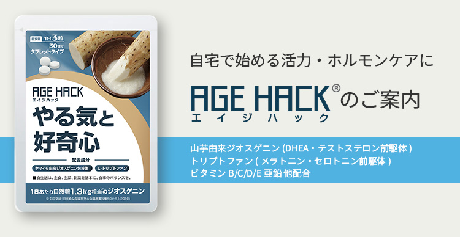
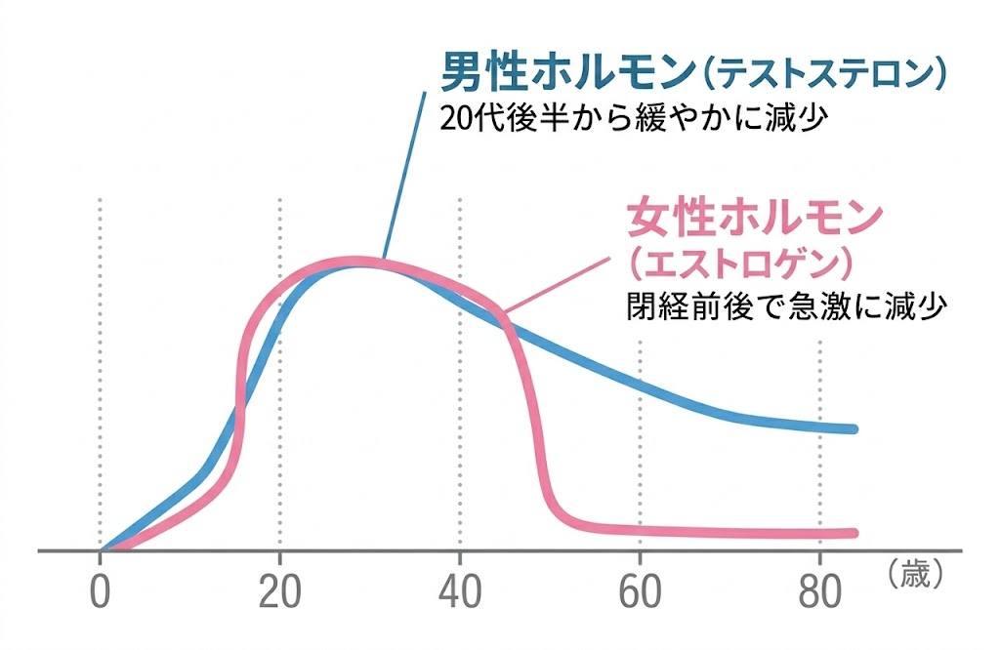
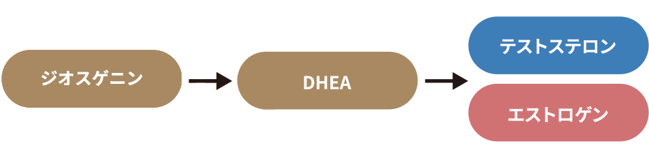
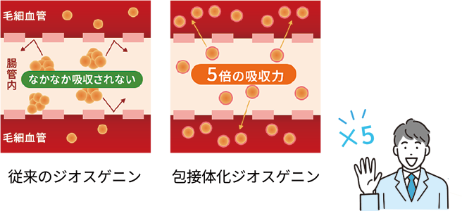
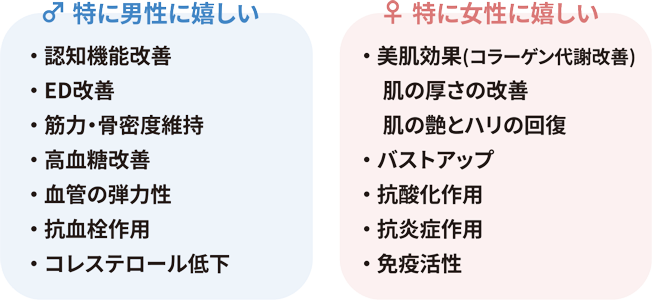
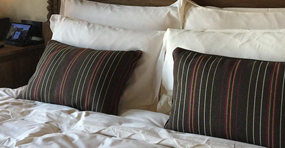
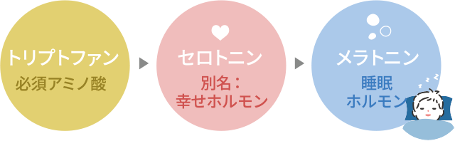
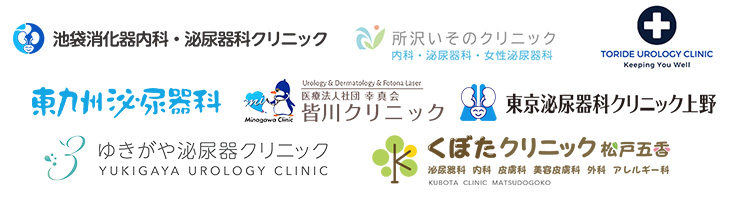
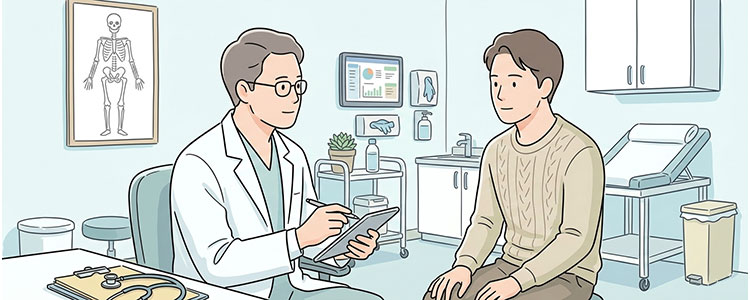
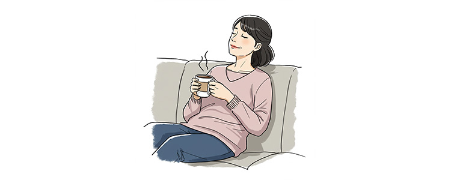

それは加齢やストレスによって減少する「性ホルモン」が関係しているかもしれません。

性ホルモン(テストステロン・エストロゲン)は、活力や心の安定、体の調子に大きく関わっています。
この成分は耳慣れない方も多いかもしれませんが、いま世界の研究者が注目をしています。
「山芋を食べると精がつく」
昔からそう言われてきたことを、ご存知の方も多いのではないでしょうか。
中国では、山芋を「山薬」と呼び、古くから滋養強壮の食材として重宝されてきました。その山芋の持つ活力の秘密が、この「ジオスゲニン」という成分です。

ジオスゲニンは山芋由来の天然成分で、DHEA(デヒドロエピアンドロステロン)というホルモンの前駆体に非常に類似した構造を持っています。
このDHEAは、「若さのホルモン」「マザーホルモン」とも呼ばれ、男性ホルモン(テストステロン)や女性ホルモン(エストロゲン)をはじめ、多くのホルモンの原料となる重要な物質です。
DHEAは20代をピークに年齢とともに減少していき、活力、筋力、認知機能、免疫力など、体のさまざまな機能に影響を与えることから、アンチエイジング分野でも大きな注目を集めています。
ジオスゲニンは、体内でこのDHEAを増やし、性ホルモン様の働きをすることで、ホルモンを作り出すための大切な材料を供給してくれます。
3粒で山芋1.3kg相当のジオスゲニンが摂取できる
実は山芋に含まれるジオスゲニンは体内に吸収されづらく、十分な効果を期待するには相当量を食べる必要があります。エイジハックは3粒に自然薯1.3kg相当のジオスゲニンを配合。さらに、特殊技術で体内吸収性を約5倍に高めていることもあり、気軽に山芋のパワーを摂取することができるのが特徴です。

性ホルモン以外のメリットも
さらにジオスゲニンは下記のような分野で効果が期待できるとされています。

このように、ジオスゲニンは活力や心身の若々しさの維持への貢献が期待できる成分なのです。

ストレス社会と言われる現代。心の安定と良い睡眠が、かつてないほど大切になっています。
その両方をサポートする成分として、トリプトファンが注目されています。
トリプトファンは必須アミノ酸の一つで、体内では作ることができません。そのため、食事やサプリメントから摂取する必要があります。

体内に入ったトリプトファンは、セロトニン(別名:幸せホルモン)に変化し、心の安定や落ち着きをもたらします。そしてセロトニンは夜になると、睡眠ホルモンであるメラトニンへと変わります。
この質の良い睡眠が、実は非常に重要です。睡眠中に体の機能が回復し、自律神経が整い、ホルモンバランスも調整されるからです。
さらに、質の良い睡眠はストレスを軽減し、体全体の炎症を抑える働きもあります。こうして心と体の良い循環が生まれるのです。
トリプトファンは、こうした一連の流れの最初のきっかけとなる成分なのです。
AGEHACKには、ビタミンB6、C、D、Eに加え、亜鉛やカルシウムといったミネラルも配合しています。
これらの栄養素は、性ホルモンの生成プロセスにおいて欠かせない役割を担っています。
特に亜鉛は、性ホルモンの産生に直接関わる重要なミネラルで、不足するとホルモンバランスが崩れやすくなるため、継続的な摂取が大切になります。
カルシウムも、骨の健康維持だけでなく、神経伝達やホルモン分泌の調節に関わっています。体のさまざまな機能を円滑に保つために必要な栄養素です。
ビタミン群も、それぞれが連携して働きます。B6はトリプトファンの変化を助け、Dはテストステロン産生をサポートし、CとEは抗酸化作用でストレスから体を守りながら、ホルモン産生そのものを助ける働きもしています。
つまりこれらのビタミン・ミネラル群は、単なる栄養補給ではなく、ホルモンを作り出し、維持していくために体が必要としている大切な材料なのです。
そして実は、これらの成分は美容にも嬉しい働きをします。ビタミンCとEが肌の老化を防ぎ、亜鉛が肌の生まれ変わりを助け、ジオスゲニンがコラーゲンやヒアルロン酸の産生を促す。
活力を取り戻すだけでなく、肌のハリやツヤといった見た目の若々しさにもつながるのです。
AGEHACKは多くの泌尿器科・内科クリニックで取り扱いが広がっていますが、それにも理由があります。

※取り扱いクリニックの一例

AGEHACKは、活力源を補充するだけでなく、体が自ら活力を「生み出す力」をサポートする成分設計になっています。
ホルモンの原料を補いながら、質の良い睡眠を促し、体を整える。
この3つが組み合わさることで、「生活習慣の改善」や「休息の質向上」といった中長期的に大切な行動変容のきっかけにもなります。
一時的な対症療法ではなく、根本から体を整えていくアプローチ。
これが医療機関が推奨する理由の一つです。

クリニックでのケアに加えて、ご自宅でも継続的に取り組めることが重要です。
遠方にお住まいの方や、お仕事で頻繁に通院するのが難しい方にとって、日常生活の中で続けられる対策は大きな助けになります。
AGEHACKは、ご自宅で手軽に続けていただけます。日々の生活習慣を見直すきっかけとして、また継続的なセルフケアの一つとして、多くの方にご利用いただいています。
こうした日常での取り組みに対するサポートは、医療機関が取り組みたい課題の一つなのです。
実際にご案内した方々からは男性・女性ともに、好意的なご感想が寄せられています。
徐々にですが、今までの更年期状態の改善を実感しています。(50代 男性)
体調良く眠れるようになり、体も温まってとても良いです(40代 女性)
体の状態が良くなりました。効果は実感しました。(40代 男性)
満足行く効果を感じています。周囲の人にもオススメしています。(40代 女性)
夫に飲ませていますが、妻の私から見て良い商品だなと思います。(50代 女性)
体力はあるけど気持ちが追いつかないなと感じていました。「動けるようになった」と感じますし、夜も眠れています。(30代 女性)
こうした声も、医師が自信を持ってお勧めできる理由の一つになっています。
多くの医師は、成分設計を理解したのちに、まず自分自身で試します。
試した結果「これは良い」となり、信頼関係のある医師に紹介する。
(実は、活力対策に苦慮されている医師は結構いらっしゃいます。)
AGEHACKの取り扱いが広がっているのは、こうした口コミもきっかけになっています。
そう感じていらっしゃる方に、ホルモンケアという選択肢を。
年齢とともに減少する性ホルモンは、活力や心の安定、体の調子に大きく関わっています。
やりたいことに向かって動き出せる自分。
鏡を見て「ちょっと変わったかも」と感じられる自分。
そんな変化に向けて、あなたも一歩踏み出しませんか?
AGEHACKはこのページの下にある申込フォームからご購入いただけます。
現在の定価は6,480円(消費税込)※こちらに配送料270円がかかります。
ご購入方法は
「単品購入」
「定期コース」
の2種類があります。お申し込みフォームの「商品」項目から選択してください。
定期コースは30日ごとに自動的に配送されるので、そのつど購入の手間なく、続けやすいのがメリットです。
また、定期コースは価格が全体的にお得になっています。
定期コースの価格は
・初回3,980円(消費税込み、送料込み)※38%引き
・2回目以降は5,813円(消費税込み、送料別)※10%引き
で購入できます。
初回のみでも解約はできますので、まずはお試ししてみたいという方にもおすすめです。
※解約を行いたい方は、次回配送の10日前までにメールまたはお問い合わせフォームから連絡してください。(詳しくは「キャンセル・返品等について」をご覧ください)
[注意事項]
定期コース初回特別価格は1世帯あたり1回限りとなっています。